trial module¶
This is the module that is in charge of running simulations comparing the Agent-Based Model of Human Activity Patterns (ABMHAP) with the data from the Consolidated Human Activity Database (CHAD).
This module contains the class trial.Trial.
-
class
trial.Trial(parameters, sampling_params, demographic)[source]¶ Bases:
objectThis class is sets up runs for the ABMHAP initialized with data from CHAD.
This is how to run a trial
- create the Trial object via __init__()
- initialize the Trial. That is, one must set up the distribution for sampling means and standard deviations) via initialize(). This is usually done by sending the appropriate files names to the function for the respective distributions.
- create the universe for the simulation
- add the people to the household
- run the simulation
Parameters: - params (params.Params) – the parameters that describe the household
- sampling_params (chad_params.CHAD_params) – the sampling parameters used to filter “good” CHAD activity data
- demographic (int) – the demographic identifier used to parametrize the agent
Variables: - id (int) – the trial identifier
- 'params' (params.Params) – the parameters that describe the household
- sampling_params (chad_params.CHAD_params) – the sampling parameters used to filter “good” CHAD data
- num_samples (int) – the number of ABMHAP samples (or trials) to be run
- demographic (int) – the demographic identifier used to parametrize the agent
- fname (str) – the name of the zipfile for the CHAD data
-
add_person_to_universe(u, idx)[source]¶ This function creates a person and sets up the universe for simulation.
Note
This function currently only assumes that each simulation has only 1 person / household. This will need to be changed later. There will be conflicts with the idx and id.
Parameters: - u (universe.Universe) – the universe the simulation will run in
- idx (int) – the index for
paramsto access to parametrize this person.
Return u: the updated/ initialized universe
Return type:
-
assign_chad_params(z, f_stats, s_params)[source]¶ Assign the CHAD statistical parameters for a given activity to the agent.
Parameters: - z (zipfile.ZipFile) – the file name (.zip) for the demographic data
- f_stats (a dictionary of int - str) – the file names of the statistical data relevant to the start time, end time, duration, and CHAD records for a given activity
- s_params (chad_params.CHAD_params) – the parameters that limit the sampling of respective statistical data
Returns: relevant parameters for each person in the household for a given activity. The tuple contains the following [in hours]: mean start time, standard deviation of start time, mean end time, standard deviation of end time, mean duration, and standard deviation of duration for each person in the household.
Rtype data: tuple of numpy.ndarray, numpy.ndarray, numpy.ndarray, numpy.ndarray, numpy.ndarray, numpy.ndarray
-
check_spacing(start_mean, start_std, end_mean, end_std, spacing)[source]¶ This is done to make sure the minimum end time does not overlap with plausible start times. The function returns the indices of agents with a parametrization that causes this overlap. This is a concern for activities like sleeping where the agent can be assigned to end too early after starting the sleep too quickly.
Parameters: - start_mean (numpy.ndarray) – the mean start time for the given activity for each person in the household
- start_std (numpy.ndarray) – the standard deviation of start time for the given activity for each person in the household
- end_mean (numpy.ndarray) – the mean end time for the given activity for each person in the household
- end_std (numpy.ndarray) – the standard deviation of end time for the given activity for each person in the household
- spacing (float) – the minimum amount
Returns: the indices of the agents with improper parametrization
Return type: numpy.ndarray
-
create_universe()[source]¶ This function creates a universe object that simulations will run in.
Return u: the universe for the simulation to run in Return type: universe.Universe
-
get_chad_stats_data_dt(z, fname, s_params)[source]¶ This function obtains the CHAD data for activity duration data that are suitable for ABMHAP simulation.
Parameters: - z (zifpile.Zipfile) – the zipfile of the activity data
- fname (str) – the file name for the data file for activity duration
- s_params (chad_params.CHAD_params) – the parameters that limit the sampling of respective statistical data for a given activity
Returns: the CHAD data for activity duration suitable for ABMHAP simulation
Return type: pandas.core.frame.DataFrame
-
get_chad_stats_data_end(z, fname, s_params)[source]¶ This function obtains the CHAD data for activity end time data that are suitable for ABMHAP simulation.
Parameters: - z (zifpile.Zipfile) – the zipfile of the activity data
- fname (str) – the file name for the data file for activity duration
- s_params (chad_params.CHAD_params) – the parameters that limit the sampling of respective statistical data for a given activity
Returns: the CHAD data for activity end time suitable for ABMHAP simulation
Return type: pandas.core.frame.DataFrame
-
get_chad_stats_data_start(z, fname, s_params)[source]¶ This function obtains the CHAD data for activity start time data that are suitable for ABMHAP simulation.
Parameters: - z (zifpile.Zipfile) – the zipfile of the activity data
- fname (str) – the file name for the data file for activity duration
- s_params (chad_params.CHAD_params) – the parameters that limit the sampling of respective statistical data for a given activity
Returns: the CHAD data for activity duration suitable for ABMHAP simulation
Return type: pandas.core.frame.DataFrame
-
get_diary(u)[source]¶ This function takes the simulation data in terms of a list of
universe.Universeand creates a list ofdiary.Diarythat contain the activity diaries. One per each household in the simulation.Parameters: u (universe.Universe) – contains all of the simulation data Returns: the activity diaries (1 entry per person) Return type: list of diary.Diary
-
get_diary_help(t, hist_act, hist_loc)[source]¶ This function takes data on the activity start times, activity codes, and location codes from an activity diary and fills out the activity, minute-by-minute in between two adjacent activities.
Parameters: - t (numpy.ndarray) – the start time from an activity diary
- hist_act (numpy.ndarray) – the activity codes from an activity diary
- hist_loc (numpy.ndarray) – the location codes from an activity diary
Returns: the minute by minute information from an ABMHAP simulation for the following: time information, activity codes, and location codes
Return type: numpy.ndarray, numpy.ndarray, numpy.ndarray
-
get_stats_data(z, f_stats, s_params)[source]¶ Assign the CHAD statistical parameters for a given activity to the agent.
Parameters: - z (zipfile.ZipFile) – the file name (.zip) for the demographic data
- f_stats (a dictionary of int - str) – the file names of the statistical data relevant to the start time, end time, duration, and CHAD records for a given activity
- s_params (chad_params.CHAD_params) – the parameters that limit the sampling of respective statistical data
Returns: relevant parameters for each person in the household for a given activity. The tuple contains the following [in hours]: mean start time, standard deviation of start time, mean end time, standard deviation of end time, mean duration, and standard deviation of duration for each person in the household.
Rtype data: tuple of numpy.ndarray, numpy.ndarray, numpy.ndarray, numpy.ndarray, numpy.ndarray, numpy.ndarray
-
get_stats_data_dt(df, num_people, n_data)[source]¶ This function samples the duration data from CHAD from a particular activity and gets the mean and standard deviation of duration for the respective activity for each person in the household.
Parameters: - df (pandas.core.frame.DataFrame) – duration CHAD data
- num_people (int) – the number of people in the household
- n_data (int) – the minimum number of data points per CHAD-person record used in sampling the CHAD data
Returns: the mean and standard deviation [in hours] for a given activity for each person in the household
Return type: numpy.ndarray, numpy.ndarray
-
get_stats_data_help(df, num_people, n_data)[source]¶ This function samples the CHAD data to obtain information on the mean and standard deviation data. This is done by doing the following
- creating an empirical distribution for the mean and standard deviation of the data
- randomly choosing a value out of the distribution for each agent in the household
Parameters: - df (pandas.core.frame.DataFrame) – the CHAD statistical data
- num_people (int) – number of people in the household
- n_data (int) – the minimum number of data points per CHAD-person record used in sampling the CHAD data
Returns: the mean and standard deviation [in hours] for a given activity for each person in the household
Return type: numpy.ndarray, numpy.ndarray
-
get_stats_data_start_end(df_start, df_end, num_people, n_data)[source]¶ This function samples data for activities that are parametrized by both start time and end time activity-parameters.
Parameters: - df_start (pandas.core.frame.DataFrame) – the CHAD data for start time [hours]
- df_end (pandas.core.frame.DataFrame) – the CHAD data for end time [hours]
- num_people (int) – the number of people in the household
- n_data (int) – the number of data points to be considered “longitudinal”
Returns: the mean and standard deviation for the start time and end time respectively
Return type: numpy.ndarray, numpy.ndarray, numpy.ndarray, numpy.ndarray
-
get_stats_data_start_end_help(df_start, df_end, num_people, n_data)[source]¶ This function samples data for activities that are parametrized by both start time and end time activity-parameters.
Parameters: - df_start (pandas.core.frame.DataFrame) – the CHAD data for start time [hours]
- df_end (pandas.core.frame.DataFrame) – the CHAD data for end time [hours]
- num_people (int) – the number of people in the household
- n_data (int) – the number of data points to be or not be considered “longitudinal”
Returns: the mean and standard deviation for the start time and end time respectively
Return type: numpy.ndarray, numpy.ndarray, numpy.ndarray, numpy.ndarray
-
initialize(demo)[source]¶ This function initializes each activity in the trial for a given demographic by using CHAD data to parametrize the activity-parameters (i.e., the mean and standard deviation of star time, end time, and duration).
Parameters: demo (chad_demography.CHAD_demography) – contains much information about the demographic Returns: a dictionary containing a tuple of the mean duration, standard deviation of duration, mean start time, standard deviation of start time (in hours, float) Return type: a dictionary of int to numpy.ndarray, numpy.ndarray, numpy.ndarray, numpy.
-
initialize_person(u, idx)[source]¶ This function creates and initializes an agent with the proper parameters for simulation.
More specifically, the function does
- creates the agent
- initializes the agent’s parameters to the respective values in
params
Parameters: - u (universe.Universe) – the universe the agent will reside in
- idx (int) – the index of the agent within the household
Return p: the agent
Return type:
-
pseudo_intraindividual_variation(start_mean, end_mean)[source]¶ This function assigns intraindividual variation for start time and end time based data where there is no longitudinal data (hence the name “pseudo”). The variation is assigned by having the following assumptions:
- Given that the mean start time and end time are assigned
- Calculate the mean duration based on the mean start time and mean end time
- Calculate the variance of the start time and end time with the following assumptions
- assume that start time and end time are independent
- variance of start time is equal to the variance of the end time
- standard deviation of the duration is set to be the coefficient of variation times the previously calculated mean duration
These assumptions are expressed mathematically below where
- 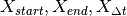 are random variables for the start time, end time, and duration, respectively
- 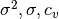 are the variance, standard deviation, and coefficient of variation
- 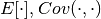 are the expected value operator and covariance operator
Given 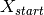 and 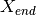,
Let,
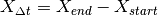
Then,
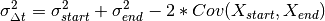
Assuming and are independent, then,
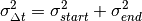
Assuming 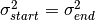, then,
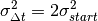
Finally,
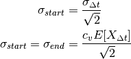
Parameters: - start_mean (numpy.ndarray) – the mean start time [in hours] for each person bing parametrized
- end_mean (numpy.ndarray) – the mean end time [in hours] for each person being parametrized
Returns: standard deviation for start time and end time, respectively for each person being parametrized
Rytpe: numpy.ndarray, numpy.ndarray
-
run()[source]¶ This function runs 1 simulations of the ABMHAP using data from CHAD. The function can handle having more than 1 person in the household.
More specifically the function does the following for each simulation:
- creates the universe
- create / initialize the person
- run the ABMHAP simulation
- store the results / data from the simulation
Return u: the results of the simulation Return type: universe.Universe
-
sample(df)[source]¶ This function samples the statistical data (of activity moments) from the CHAD diaries.
The function samples the distributions of both the means and the the standard deviations independently of each other.
Parameters: df (pandas.core.frame.DataFrame) – a list of statistical data (mean, standard deviation, coefficient of variation) for activity information (duration, start, or end) Returns: values for the mean, standard deviation, and coefficient of variation, respectively Return type: numpy.ndarray, numpy.ndarray, numpy.ndarray